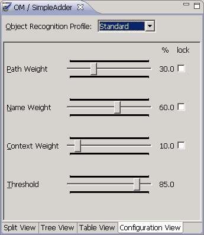

In the configuration view in the Object Mapping Editor you can alter the object recognition for the test execution.
Understanding object recognition
Object recognition during test execution is based on a calculation which takes various factors into account. For some applications, some factors may be more important than others, and you can change their weighting accordingly.
The object location is a heuristic process. During test execution, a calculation is made for each component in the AUT to see how similar it is to the originally mapped component. This calculation is based primarily on the component type - if you mapped a combo box, only combo boxes will considered. For each component of the same type, the similarity to the original is calculated using weighted properties. The factors used in the calculation are:
- Name:
- The name of the object within the AUT code, as given by the developer (if a name was given).
- Path:
- The route through the AUT hierarchy to get to this component.
- Context:
- The components in the vicinity of this component.
- Threshold:
- This determines what percentage value a component in the AUT must have in order to be considered as the originally mapped component. Components with a value under the threshold are not considered. The component with the highest value above the threshold is chosen during execution.
Options for object recognition You can change the profile used during test execution using the combo box:
- Standard:
- This is the default profile. It has a high value for name weight and lower values for context and path. The threshold is 85%.
- Strict:
- In this profile, the values for name, path and context are the same as in the standard profile. The threshold is at 100%. This means that a component must exactly correspond to the originally mapped component.
- Given names:
- In this profile, only the component name is considered. A component will only be selected if it has the same name as the originally mapped component. This profile can be used when you are sure that all of the components in the AUT have unique names.
- Custom:
- This profile lets you move the sliders yourself. You can lock sliders to stop them being affected by other sliders.
Figure 3.25: Object Mapping Configuration
|

|
![\includegraphics[height=2cm]{danger}](img1.jpg) |
Take care when manually customizing the object mapping settings. You may have test execution problems if you have set the values too strictly, or not strictly enough. |
Copyright BREDEX GmbH 2014. Made available under the Eclipse Public License v1.0.